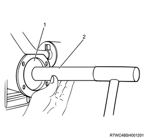
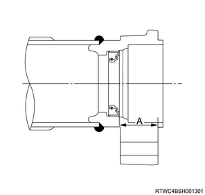
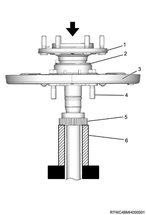

Rear axle assembly (drum brake) reassembly (All models)
1. Axle case oil seal installation
1. Install the axle case oil seal to the axle case using special tool.
Note
- Apply BESCO L-2 grease or equivalent to the lip of the oil seal.
- Using an oil seal installer and grip, install the new oil seal.

SST: 5-8840-2202-0 - oil seal installer

SST: 5-8840-0007-0 - grip

- Oil seal installer
- Grip
Note
- Measure the dimensions of A in the diagram.
Standard： 34.5 to 36.1 mm { 1.36 to 1.42 in }

2. Hub outer oil seal installation
1. Install the hub outer oil seal to the bearing holder using special tool.
Note
- Using an oil seal installer, install a new oil seal so that it is flush with the bearing holder.
SST: 9-8522-1246-0 - bearing installer
- Bearing holder
- Oil seal
- Oil seal installer
3. Wheel pin installation
1. Install the oil catcher to the axle shaft.
Note
- Apply Loctite FMD127 or equivalent and install.
Caution
- If any Loctite runs onto locations where it should not be applied, wipe it off.
- Diameter: 146 mm {5.75 in}
- Diameter: 118 mm {4.65 in}
- Loctite application area
- Area where Loctite is not to be applied
2. Install the wheel pin to the axle shaft.
Note
- Drive the wheel pin into the axle shaft flange using a hammer.
4. Rear differential assembly installation
1. Install the rear differential assembly to the rear axle case.
Note
- Clean the aligning surfaces of the axle case and the differential carrier, and then apply ThreeBond 1215 or equivalent as shown in the diagram.
- 3 mm {0.12 in}
Note
- Install the final drive assembly to the axle case, and tighten the bolts and the nuts to the specified torque.
Tightening torque： 64 N・m { 6.5 kgf・m / 47 lb・ft } Bolt
Tightening torque： 44 N・m { 4.5 kgf・m / 32 lb・ft } Nut
5. Double taper roller bearing installation
1. Fill the grease in the bearing.
Note
- Fill with SHOWA SHELL 6459 grease.
Amount of filling： 16 g { 0.56 oz }
2. Install the bearing to the bearing holder using special tool.
Note
- Insert a new bearing and oil seal into the bearing holder.
- Set the bearing installer on the press.
SST: 9-8522-1271-0 - bearing installer
Note
- Place the bearing, oil seal, and back plate on the bearing installer as shown in the diagram.
- Align the bolt and axle shaft with the center of the hole to insert.
- Press-fit the axle shaft into the double taper roller bearing.
- Axle shaft
- Oil seal
- Bolt
- Back plate
- Double taper roller bearing
- Bearing installer
6. Rear axle shaft reassembly
1. Install the retainer to the axle shaft using special tool.
Note
- Place a new retainer or sensor rotor on top of the bearing installer.
- Press-fit the bearing so that it is fixed to the axle shaft using the retainer or sensor rotor, and then assemble the axle shaft assembly.

- Axle shaft
- Oil seal
- Back plate
- Bolt
- Retainer or sensor rotor
- Bearing installer
2. Install the shim to the axle shaft.
3. Install the snap ring to the axle shaft using a snap ring pliers.
Note
- Securely install a new snap ring.
- Replace with a new one if there is any deformation or damage.

- Snap ring
- Shim
- Retainer or sensor rotor
4. Measure the clearance using a feeler gauge.
Standard： 0.00 to 0.20 mm { 0.000 to 0.008 in }
Note
- If clearance is more than or equal to the specified value, replace the shims and adjust to achieve the specified value.
| Part number | Thickness |
| 9-4151-9110-∗ | ： 0.18 mm { 0.0071 in } |
| 8-9713-0387-* | ： 0.50 mm { 0.0197 in } |
7. Rear axle shaft installation
1. Install the rear axle shaft to the axle case.
Note
- Clean the aligning surfaces of the axle case and bearing holder.
- Apply liquid gasket, ThreeBond TB1215, or equivalent to the axle case installation surface.
Caution
- Insert the axle shaft into the axle case without damaging the oil seal.
- If the bearing holder installation bolt has been removed from the brake assembly, be sure to use a new bolt.
Note
- Install the bearing holder fixing nut and tighten to the specified torque.
Tightening torque： 122 N・m { 12.4 kgf・m / 90 lb・ft }